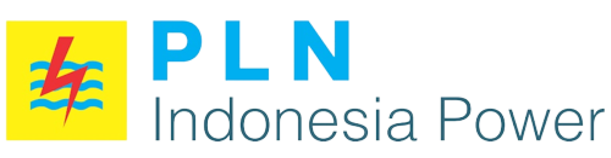
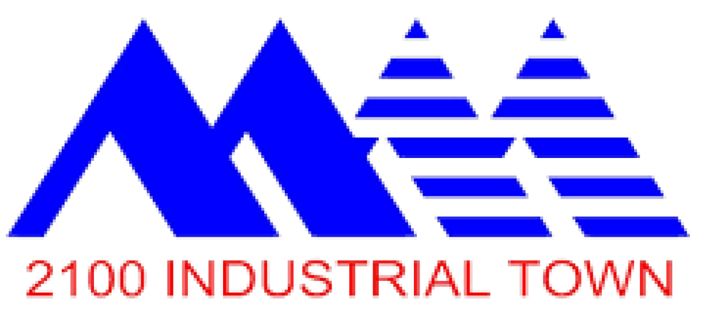

+100
Monitoring sites deployed across Indonesia
We monitor, model, and transform your data into actionable insights. One platform connects every sensor, automates compliance reporting, and turns telemetry into board-ready ESG narratives.


Six end-to-end programs, each mapped to a specific Indonesian regulation. We bring the sensors, the integration, the dashboards, and the reports - you stay in compliance and ahead of audit.
Continuous Emission Monitoring System - SO2, NOx, PM, Flow, Oxygen, etc, with automated KLHK reporting and audit-ready archives.
Explore solutionReal-time water quality at every discharge outfall - COD, BOD, TSS, pH, flow - streamed to the regulator and to your ops floor.
Explore solutionThree-stage program: dispersion study, AQMS installation and a working ambient Air Digital Twin for your estate.
Explore solutionScope 1, 2 and 3 GHG inventory built from actual telemetry, not spreadsheets. CDP-ready disclosures generated on demand.
Explore solutionGRI-aligned, PROPER-aware report generation. Your data narrates itself - board, regulator and rating-agency views from the same source of truth.
Explore solutionWater risk and efficiency assessment for industrial estates. From baseline to a multi-year management blueprint.
Explore solutionAny sensors type, brand and protocols. We ingest whatever sensors you've already bought and install the ones you haven't.
Built around SISPEK, SPARING, ISPU, PROPER. KLH formats, sampling intervals and submission cadence baked into the platform, not bolted on.
Every reading is timestamped, signed and stored. Auditors get a link, not a binder. Internal teams get a real evidence trail.
The same telemetry that satisfies the regulator drives predictive maintenance, energy optimisation and emission reduction targets.
Estates that can't send data outside the gate get an on-premise warehouse. Everyone else runs on managed cloud with a 99.9% SLA.
MUSA Assistant reads your live data and your regulatory baseline. Ask "why did stack A3 spike at 03:00 yesterday?" and get a sourced answer.
A live Digital Twin for an industrial hub. Real-time Air and Water Quality along with Energy and Water Consumption data - one console for the industrial estate, drill-down for each plant.
Indonesian Air Quality Index. Reading is within safe range (Good: 0-50).
Remaining environmental carrying capacity. Headroom for ~25-30 new heavy-industry tenants.
Sensor → Integrator → Data Management → View → Assistant.
Each layer is independently deployable: together they're a digital twin.
Mini-PC data logger on-site. Talks to every sensor and instrument; monitors its own health.
Environmental, energy and operations data in one centralised warehouse. Cloud or on-premise.
All-in-one BI: monitor, model and analyse. The Environmental & Energy Digital Twin lives here.
Personal AI agent over Chat and Email. Sends alerts, answers questions, summarises trends.
Selected snapshots from the field - from outfall installations to integrator cabinets - showing what a working MUSA deployment looks like.